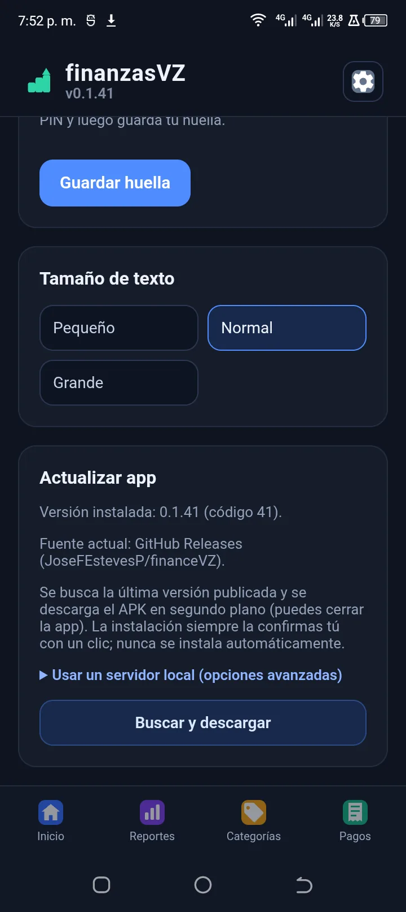
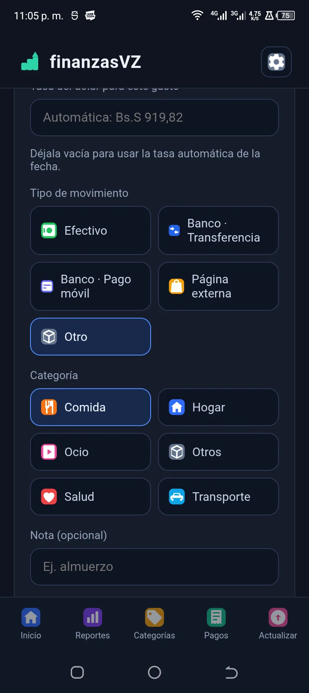
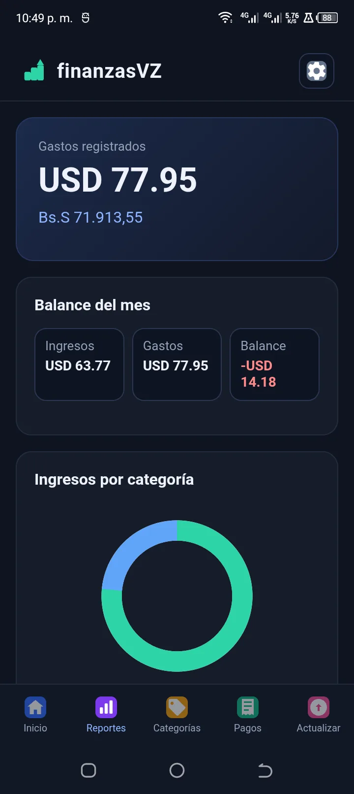
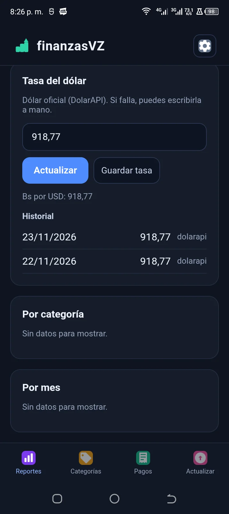
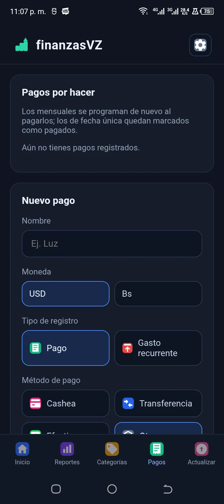
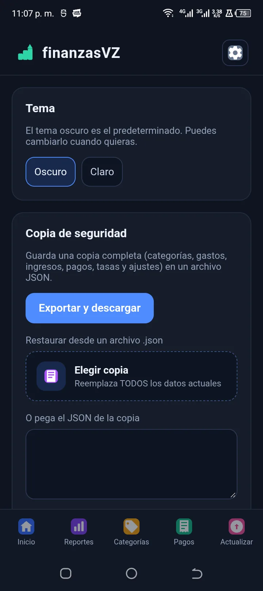

9 capturas reales de la app en Android (incluye vistas con scroll)
1. Antes de empezar
1.1 Qué es finanzasVZ
finanzasVZ es una app Android de finanzas personales para uso personal. Toda la lógica está en Rust y la interfaz se muestra dentro de un WebView con Dioxus. Los datos viven en SQLite en el propio teléfono: no hay cuentas de usuario ni servidor propio.
Para qué sirve: llevar el control de gastos e ingresos en bolívares y dólares, programar pagos y cuotas, definir presupuestos por categoría y ver reportes, sin depender de la nube.
Dinero
Se guarda en centavos como entero y la base es USD. Los bolívares son solo una vista usando la tasa del día.
Tasa de cambio
Se lee del dólar oficial publicado por el BCV en su página web y se guarda por fecha. Si no hay tasa del día, se usa la última anterior.
Fechas
En pantalla se muestran como dd/mm/aaaa. Internamente se guardan en formato ISO.
Privacidad
Sin anuncios ni analítica. La única conexión externa es la consulta de la tasa, sin datos personales.
1.2 Instalación y primeros pasos
Antes de instalar: el APK se distribuye fuera de Play Store. Activa la instalación de aplicaciones desconocidas y usa solo APKs generados por ti. Consulta la política de privacidad en josefestevesp.github.io/finanzasvz-privacidad.
Instala el APK desde updates/financevz.apk o desde el servidor local de actualizaciones.
Abre la app. No hay registro ni inicio de sesión: empiezas directamente en Inicio.
Si vas a usar el actualizador, comprueba que el móvil esté en la misma Wi-Fi que el servidor.
Si activas PIN o huella, configúralos desde Configuración antes de bloquear la app.
Importante: un build debug y uno release firmado tienen firmas distintas. Para pasar de debug a release, desinstala la versión anterior y conserva antes una copia de financevz.db si quieres mantener los datos.
1.3 Cómo se organiza la pantalla
La app tiene una cabecera con el logo (vuelve a Inicio) y una tuerca (abre Configuración). Abajo hay un menú fijo con cuatro pestañas: Reportes, Categorías, Pagos y Actualizar. Inicio se abre tocando el logo; no hay botón flotante central.
Estructura general: cabecera, contenido y menú inferior.
2. Inicio
2.1 Resumen del mes
La tarjeta principal muestra el balance, los gastos y los ingresos del mes en USD, con su equivalente en bolívares al lado. La tarjeta de tasa indica el valor usado y su origen (automático o manual).
Debajo aparece la distribución de gastos por categoría, con un gráfico de dona y el porcentaje de cada categoría. Es útil para ver de un vistazo hacia dónde va el dinero.
2.2 Últimos gastos y accesos rápidos
El bloque Últimos gastos lista los movimientos recientes con categoría, fecha, tipo de movimiento e importe. Desde cada fila puedes ver la evidencia adjunta, devolver el gasto, editarlo o eliminarlo. El botón + Añadir gasto abre el formulario nuevo; Ingreso hace lo propio para ingresos.
Los enlaces Ver reportes →, Ver pagos → y Ver ingresos → llevan a esas secciones. Si hay pagos pendientes, el aviso Pagos por hacer: N muestra cuántos tienes.
Flujo típico: abre Inicio → revisa el balance → toca + Añadir gasto → guarda → comprueba que el gasto aparece en Últimos gastos y en la distribución.
Desliza hacia arriba para ver la lista completa de movimientos; la pantalla tiene scroll.

Inicio desplazado: distribución y últimos gastos.
3. Gastos e ingresos
3.1 Registrar un gasto
Pulsa + Añadir gasto desde Inicio. El formulario permite elegir moneda (USD o Bs), escribir el importe, seleccionar el tipo de movimiento y la categoría, poner fecha y añadir una nota opcional.
Campo
Tipo
Obligatorio
Observación
Importe
Numérico
Sí
Los dígitos se escriben como centavos y se formatean al escribir; no conviertas dentro del campo.
Moneda
USD / Bs
Sí
Si eliges Bs, se convierte a USD con la tasa vigente.
Tipo de movimiento
Chips
Sí
Efectivo, Banco · Transferencia, Banco · Pago móvil, Página externa u Otro. Se muestra en los listados.
Categoría
Lista
Sí
Usa las categorías de gasto creadas en Categorías.
Fecha del gasto
Fecha
Sí
Visible como dd/mm/aaaa.
Tasa del dólar
Numérico
No
Déjala vacía para usar la automática de la fecha; si la corriges, se guarda para ese gasto.
Evidencia
Imagen
No
Adjuntar imagen o Toca para elegir una foto; se puede quitar antes de guardar.
Nota
Texto
No
Hasta 200 caracteres.
Termina con Guardar gasto. Si estás editando, el botón cambia a Guardar cambios y puedes Cancelar edición.

Tipo de movimiento en el formulario de gasto.
3.2 Registrar un ingreso
Desde Inicio, toca Ingreso. El formulario es equivalente: importe, moneda, Tipo de movimiento, Categoría de ingreso, Fecha del ingreso, tasa opcional y nota. Guarda con Guardar ingreso.
3.3 Editar, eliminar y buscar
En la lista de Últimos gastos, los iconos permiten Devolver gasto, Editar gasto y Eliminar gasto. Al eliminar aparece una confirmación; si el gasto tenía imagen de evidencia, también se borra. Buscar movimientos abre la búsqueda por texto, categoría y rango de fechas, con los mismos botones para gastos y de ingresos. La evidencia se consulta con Ver evidencia y se cierra desde el visor.
Devolución: toca el icono de devolución en un gasto y se crea un ingreso del mismo importe, fecha, tasa y tipo de movimiento, con la nota «Devolución de …» en la categoría Otros. El gasto original se conserva en el historial.
Consejo: si el importe escrito no coincide con lo esperado, revisa que hayas tecleado centavos (por ejemplo 85789 para 857,89) y no un número con punto decimal.
4. Reportes
La pestaña Reportes concentra el resumen de gastos, ingresos y balance, la distribución por categoría y el historial de la tasa de cambio.

Reportes: resumen, distribución e historial.
4.1 Períodos y categorías
Los interruptores Por mes y Por categoría cambian la vista del gráfico. La sección Ingresos por categoría muestra cuánto aporta cada categoría, y Gastos registrados el detalle del período. Si aún no hay movimientos, aparece Sin datos para mostrar.
Para qué sirve: comparar lo que entra y sale, detectar categorías que se salen del presupuesto y seguir la evolución mes a mes.
4.2 Tasa del dólar
El bloque Tasa del dólar muestra el valor vigente en bolívares por USD y su fecha. Si la tasa automática no es la que quieres usar, escribe el valor en el campo y pulsa Guardar tasa. El botón Actualizar vuelve a leer la tasa del sitio del BCV.
Nota: la corrección manual no altera la tasa histórica leída del BCV; solo guarda el valor que decides usar. Si un día no hay tasa, la app reutiliza la última disponible.

Reportes desplazados: detalle por categoría e historial de tasas.
5. Categorías y presupuestos
La pestaña Categorías administra las categorías de gasto y de ingreso, y define límites mensuales por categoría.
Categorías y presupuestos mensuales (vista desplazada).
5.1 Crear categorías
Usa Crear categoría para gastos o Crear categoría de ingreso para ingresos. Indica el Nombre y un Color (por ejemplo #2dd4a7) para identificarla en gráficos y listas.
Campo
Tipo
Obligatorio
Observación
Nombre
Texto
Sí
Ej. Mascotas o Bonos.
Color
Color
No
Se usa en el gráfico de distribución y en las etiquetas.
5.2 Presupuestos mensuales
En Presupuestos mensuales, escribe el Límite en USD de una categoría (por ejemplo 100.00) y pulsa Guardar presupuesto. La fila mostrará Gastado X de Y; si superas el límite, el aviso aparece en color de alerta.
Para eliminar el límite, toca Quitar presupuesto. Si no hay límites definidos, verás Aún no hay presupuestos.
Flujo recomendado: crear categorías → asignarlas a los gastos → poner un límite mensual → revisar en Reportes si se está respetando.
6. Pagos y cuotas
La pestaña Pagos sirve para recordar pagos recurrentes, compromisos con fecha concreta y compras a crédito con cuotas.

Pagos por hacer y formulario de nuevo pago (vista desplazada).
6.1 Pagos por hacer
Cada fila muestra el nombre, el tipo, el estado, el método, la fecha o día de vencimiento y una nota opcional. El importe aparece en USD y su equivalente en Bs. El botón Pagar está disponible solo mientras el pago no esté marcado como pagado.
Los pagos Mensuales se programan de nuevo al pagarlos; los de Fecha única quedan marcados como pagados. Los vencimientos próximos o pasados se resaltan. Puedes eliminar cualquier pago con el icono de cerrar.
6.2 Crear un pago
Campo
Tipo
Obligatorio
Observación
Nombre
Texto
Sí
Ej. Luz.
Moneda
USD / Bs
Sí
Define cómo se interpreta el importe escrito.
Tipo de registro
Pago / Gasto recurrente
Sí
Se oculta al elegir Cashea.
Método de pago
Cashea / Transferencia / Efectivo / Otro
Sí
Define qué campos aparecen después.
Importe
Numérico
Sí
Se escribe en centavos, como en gastos.
Tipo de pago
Mensual / Fecha única
Sí
Mensual pide un día de vencimiento (1–31); fecha única pide una fecha.
Categoría
Lista
Sí
Se asigna al gasto cuando se paga.
Nota
Texto
No
Ej. Cuota 3/6.
Termina con Crear pago. El registro aparece en la lista superior.
6.3 Cashea
Al elegir Cashea, la app pide un Pago inicial, el número de cuotas y el monto de cada cuota, y calcula el Total de la compra. Sin intereses: la inicial se paga hoy y el resto cada 14 días.
Cómo contabiliza: cada cuota se convierte en gasto solo cuando pulsas Pagar. La cuota se calcula con la tasa BCV vigente en su fecha, por lo que el equivalente en bolívares puede cambiar entre cuotas.
7. Actualizar la app
La pestaña Actualizar permite buscar e instalar una versión nueva desde un servidor local, con verificación del archivo antes de descargarlo.
Actualizador: URL raíz, descarga e instalación manual.
7.1 Buscar e instalar
Servir updates/ en la PC→Escribir la URL raíz→Buscar y descargar→Instalar APK descargado
En la PC, ejecuta python3 scripts/serve-update.sh. El puerto por defecto es 8000.
En el campo URL del servidor escribe solo la raíz, por ejemplo http://<IP-del-PC>:8000. No añadas /update.json ni el nombre del APK.
Pulsa Buscar y descargar. La app valida que el manifiesto tenga un sha256 de 64 hexadecimales y comprueba el archivo antes de instalar.
Cuando termine, toca Instalar APK descargado. La instalación nunca se lanza automáticamente.
Requisitos: móvil y PC en la misma Wi-Fi, puerto abierto en el firewall si hace falta, y version_code del manifiesto mayor que el de la versión instalada. El servidor usa HTTP, así que úsalo solo en una red de confianza.
Si falla la instalación: casi siempre es por cambio de firma (debug → release) o por no haber autorizado la instalación de aplicaciones desconocidas. Desinstala la versión anterior y vuelve a intentarlo.
8. Configuración
Toca el engranaje de la cabecera para abrir Configuración. Allí están el tema, las copias, la seguridad y el tamaño de texto.

Configuración desplazada: copias y seguridad.
8.1 Tema y tamaño de texto
Tema puede ser Oscuro (predeterminado) o Claro. El cambio aplica también a las barras del sistema y se recuerda al reiniciar. En Tamaño de texto elige Pequeño, Normal o Grande.
8.2 Copias de seguridad
En Copia de seguridad puedes Exportar y descargar el JSON completo, Restaurar desde un archivo .json, pegar el JSON en O pega el JSON de la copia y usar Restaurar copia pegada, o generar Crear copia automática ahora.
Copia automática guarda copias al abrir la app y cada 12 horas mientras esté abierta (intervalo ajustable entre 6 y 48 h). Se conservan las 3 más recientes y no se pide permiso de almacenamiento.
Atención: restaurar reemplaza TODOS los datos actuales. La operación es transaccional, pero conviene exportar antes. Guarda la copia fuera del teléfono si quieres protegerla de una desinstalación.
8.3 PIN y huella
Acción
Cómo hacerlo
Observación
Activar PIN
Escribe Nuevo PIN y Repite el PIN → Activar PIN
4 dígitos, guardados como SHA-256. No hay recuperación: anótalo.
Quitar PIN
Escribe PIN actual (para quitarlo) → Quitar PIN
Al quitarlo también se desactiva la huella.
Huella
Guardar huella o Quitar huella
Requiere PIN activo como respaldo y huella configurada en Android.
Bloquear
Bloquear ahora
Pide PIN o huella para volver a entrar.
Si la huella falla o el teléfono no tiene sensor configurado, entra siempre con PIN. En la pantalla de bloqueo también aparece Entrar con huella cuando está activada.
9. Datos, copias y privacidad
Todo se guarda en el directorio privado de la app (getFilesDir()):
financevz.db: base de datos, movimientos, categorías, ajustes y URL de actualizaciones.
evidence/: imágenes adjuntas, con nombre ev_<timestamp>.<ext>.
backups/: copias financevz-<fecha>.json (últimas 3).
updates/: APK descargado y archivos temporales de la descarga.
Al arrancar se borran el APK cacheado ya instalado y los descartes .part. En escritorio se puede cambiar la ruta con FINANCEVZ_DATA_DIR.
Privacidad: no hay cuentas ni analítica. Los gastos y copias se guardan solo en el dispositivo. La única conexión es la página del BCV, www.bcv.org.ve, sin datos personales. Política completa: josefestevesp.github.io/finanzasvz-privacidad.
10. Preguntas frecuentes
¿Por qué no aparece la tasa de hoy?
El BCV publica el dólar oficial con una «Fecha Valor». Si aún no hay valor para la fecha, la app usa la última tasa anterior. Puedes corregirla en Reportes o en el propio formulario del movimiento.
¿Por qué el importe se guarda con otro valor?
Los campos de importe interpretan los dígitos como centavos y los formatean mientras escribes. Escribe 85789 para 857,89 USD (o el equivalente en Bs).
¿Puedo recuperar el PIN?
No. El PIN se guarda como SHA-256 y no se puede leer. Restaura una copia o desinstala la app solo si aceptas perder los datos locales.
¿La app sube mis gastos a algún servidor?
No. Solo consulta la tasa de cambio. No hay servidores propios, anuncios ni analítica.
¿La instalación del APK dice que el archivo es dañino?
Android/Play Protect avisa porque la instalación es externa a Play Store. Autoriza la instalación de aplicaciones desconocidas únicamente para APKs que hayas generado tú.
¿Cambió la firma y no puedo actualizar?
Desinstala la versión anterior, exporta antes una copia desde Configuración y vuelve a instalar. Android no permite actualizar entre firmas distintas.